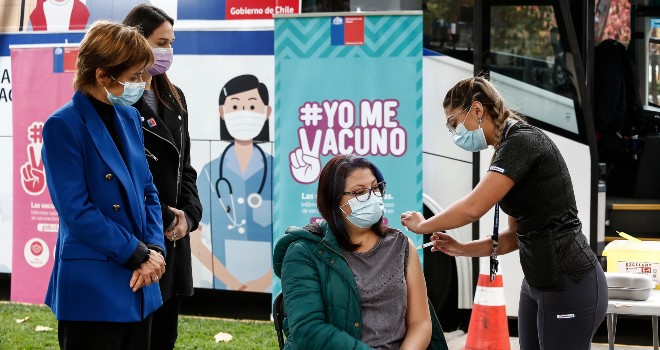
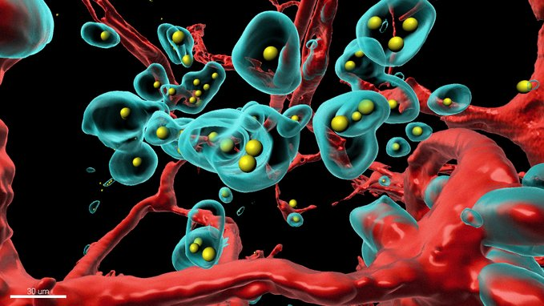
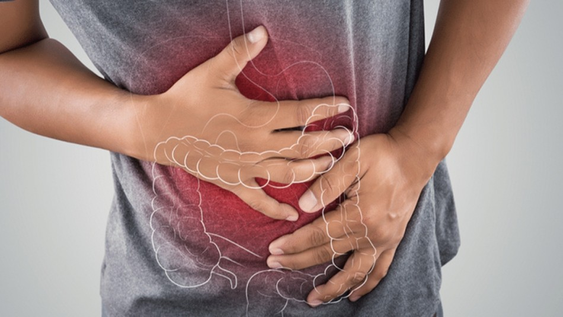

Volverán las discos y clubes con “carnet COVID”, pero en Suiza
De acuerdo lo informado por el gobierno de ese país, los primeros certificados podrían también facilitar los viajes en avión y otros desplazamientos al extranjero. Se espera sean emitidos después del 7 de junio.
>>Para más informacion<<

COVID-19: Instalan vacunatorios móviles en zonas con alta densidad de trabajadores
La autoridad sanitaria llegó hasta Ciudad Empresarial en Huechuraba, donde hay aproximadamente 900 empresas y donde se ubica uno de los puntos de vacunación extramuro.
>>Para más informacion<<

3 cosas básicas que puedes hacer para fortalecer la respuesta de la vacuna del covid-19
Cada vez son más los chilenos que se están vacunando contra el COVID-19 y por lo mismo es importante destacar cómo los hábitos saludables pueden ayudar a alcanzar una buena salud inmunológica y fortalecer la respuesta de la inoculación.
>>Para más informacion<<

¿No vas mucho al baño? Los peligros del estreñimiento para tu salud
El tránsito lento es una molestia común de las personas del mundo hoy. Es común encontrar suplementos, alimentos, consejos y recomendaciones para poder ayudar a las personas que sufren de esta incómoda condición.
>>Para más informacion<<No lo esperabas: 8 alimentos que debes evitar si tienes ansiedad o depresión
Se estima que en Chile el 16% de la población tiene alguna forma de trastorno ansioso, y con la Pandemia todos hemos visto como los síntomas de estas condiciones aumentan.
>>Para más informacion<<
Insomnio, estrés y ansiedad: Los síntomas que aparecieron tras el prolongado confinamiento
El COVID-19 ha dejado severas huellas en la salud mental de las personas. Las largas cuarentena no sólo han deteriorado los cuadros de quienes tenían patologías psicológicas o psiquiátricas antes de la pandemia, sino que además han provocado la aparición de síntomas en quienes no tenían antecedentes clínicos.
>>Para más informacion<<Categorias


Nacional

Internacional

Tendencias

Contactenos

Deportes

Salud

Entrevistas

Reportaje